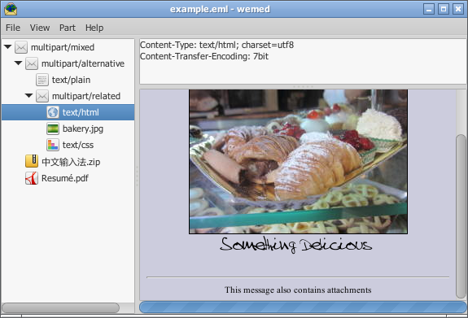

*wemed
A multipart MIME document viewer and editor
Current version: beta 0.2
About
Wemed allows you to create, edit and view multipart MIME documents, including mail message (.eml) files and web page archives (.mhtml)
MIME is defined by rfc5322, which is a revision of rfc2822, itself a successor to rfc822. Modern eml files are still given the MIME type of message/rfc822.
Wemed is based on gtk-3.0, libwebkitgtk-3.0 and gmime-2.6
Wemed is GPLv3 licensed.
Q & A
How do I install wemed?
For Arch Linux, wemed is available from the AUR:
$ yaourt -S wemed
Ubuntu users can fetch the binary from Launchpad:
$ sudo apt-add-repository ppa:ohw-giles/wemed
$ sudo apt-get update
$ sudo apt-get install wemed
To install from source:$ sudo apt-get update
$ sudo apt-get install wemed
$ # first install development libraries for webkitgtk-3.0 and gmime-2.6
$ git clone https://github.com/ohwgiles/wemed.git
$ mkdir -p path/to/build && cd path/to/build
$ cmake path/to/source
$ make
$ git clone https://github.com/ohwgiles/wemed.git
$ mkdir -p path/to/build && cd path/to/build
$ cmake path/to/source
$ make
I found a bug / I want to request a feature
Contact me through github. Or, fork wemed and send me a pull request
Command-line version?
Try ripmime